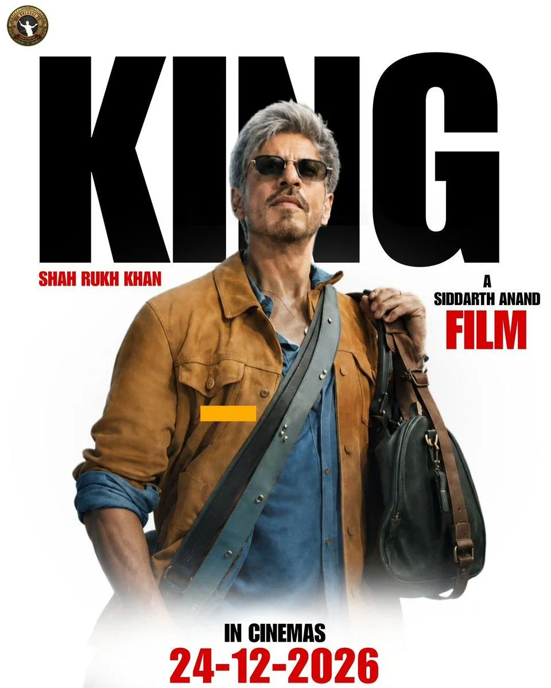

The Final Thesis · section 15 of 92
19. KING: what is he cooking?



5
The official release date announced for KING is December 24, 2026.
The anticipation surrounding the film now exists within a very different environment from the one in which RA.ONE and Chennai Express were launched.
In 2011, the challenge was to convince audiences that a Bollywood film could become an interactive digital entertainment experience.
In 2013, the challenge was to make fans part of the journey to the trailer, the film, and the box office.
In 2023, Pathaan, Jawan, and Dunki demonstrated that Khan's presence, a controlled release strategy, and the scale of the audience could turn a film into a global event.
In 2026, the technology landscape includes generative AI, interactive content, immersive media, creator platforms, and the ability to make entertainment participatory in ways that were not available during the Chennai Express campaign.
And Khan has now been publicly linked to an AI interactive-content company as an investor.
The questions for KING
Will KING be marketed as a film—or as an experience?
Could the audience become part of a narrative world, rather than simply the recipient of promotional material?
Could AI-powered interactive storytelling become part of the campaign?
FLAM's publicly described focus makes the question timely, but there is no verified announcement connecting FLAM to KING.
Could the fan clubs become the infrastructure, not just the audience?
With a global fan ecosystem already in place, could a future campaign enable fan-created stories, games, merchandise concepts, and interactive experiences under an authorised framework?
And what, if anything, connects the early SRKWORLD vision to the present?
The historical connection is intriguing. Whether it leads to a new initiative is an open question.
The closing headline
THE FINAL FRAME